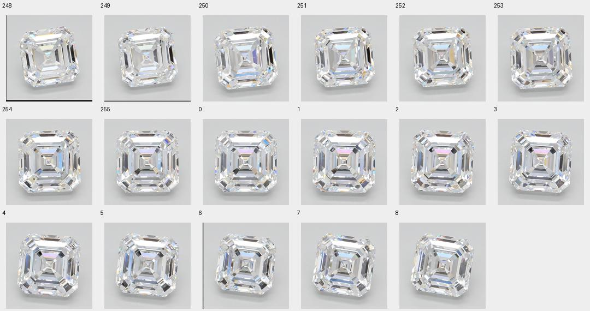
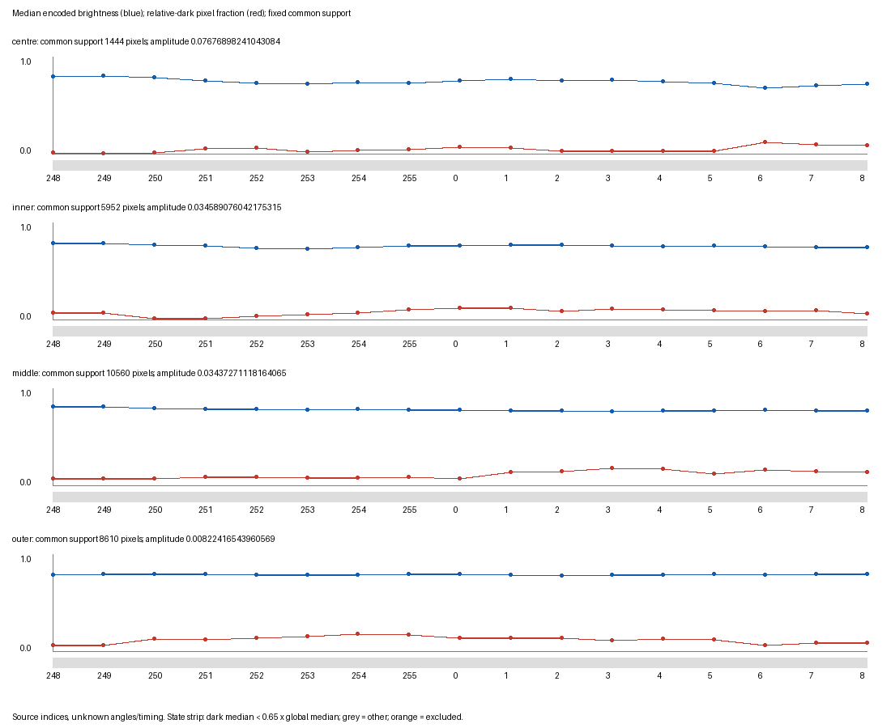
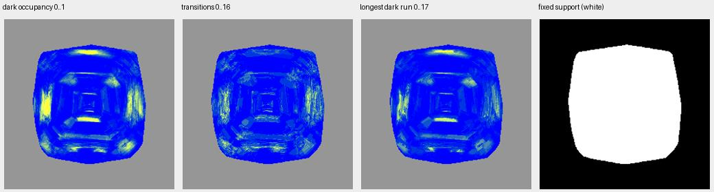
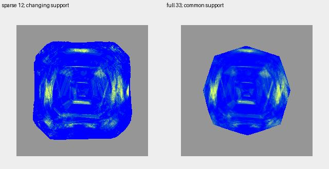
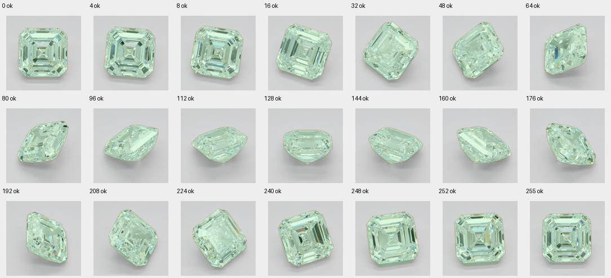
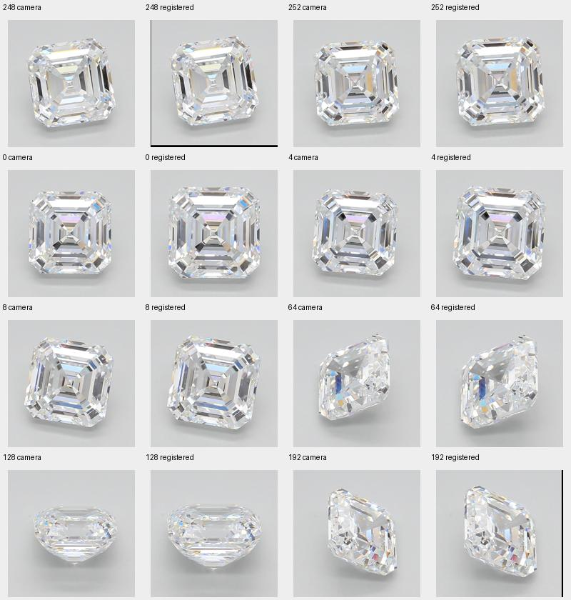
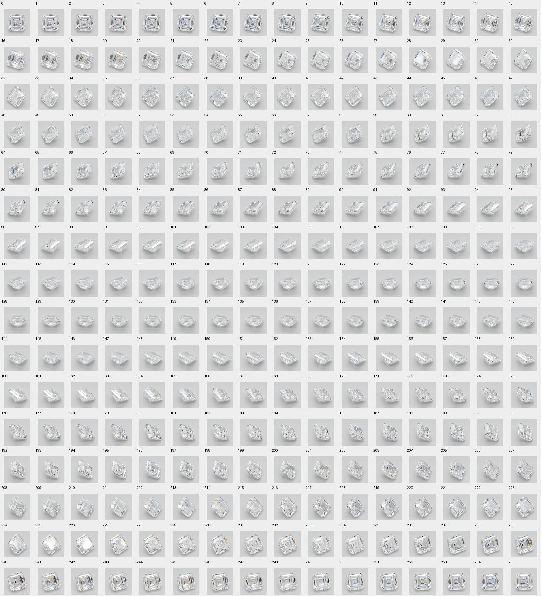

256 original frames → unchanged preprocessing → 17 consecutive near-face-up frames. The full sequence reveals local switching and dark-run lengths that sparse snapshots cannot establish.
Methods & full comparisonSource manifestPrimary CSVPrimary measurementsPR #16Original viewer
248–255 → 0–8 preserves source adjacency across the viewer wrap. The centre changes, with relatively dark pixels alternating inside a consistently bright regional median.
| Region | Median amplitude | Pixels switching | Dark run p90 / max |
|---|---|---|---|
| Centre | 0.077 | 36.4% | 2 / 9 frames |
| Inner | 0.035 | 43.2% | 4 / 12 |
| Middle | 0.034 | 56.0% | 4 / 11 |
| Outer | 0.008 | 52.1% | 5 / 15 |
Fixed image pixels, not tracked facets. Relative darkness: below 0.65 × per-frame common-support median. Frame counts have no calibrated seconds or degrees. Runs are censored at interval ends.

Blue: regional median brightness. Red: fraction of pixels relatively dark. All regional medians stay above the dark threshold; the grey state strips therefore hide the local activity visible in the pixel maps below.

Yellow indicates a high value within each labelled scale; blue a low value; grey lacks fixed support. These maps locate recorded contrast behavior rather than diagnose leakage.

On identical support, the sparse estimate differs from full 33-frame dark occupancy by +0.48 percentage points in the centre, −0.01 inner, +0.75 middle and −1.90 outer. Broad occupancy was captured reasonably well; intervening transitions and consecutive run lengths were not measurable.

This preview also changes the support method; use the numeric comparison for the controlled same-support sampling comparison.
All 256 outlines pass the existing heuristic, including profiles. Primary outer support is 82.4%; the wider tilted window drops to 57.9%. Keep those pose-sensitive results separate. Coarse rings change at different points; this does not prove physical step coherence or hall-of-mirrors quality.


Every source index is shown, including views excluded from near-face-up measurement. Original JPEGs are recoverable using the versioned batch URLs and hashes in the manifest.

No cut-quality score: absolute light return, leakage, fire, body colour, fluorescence and purchase recommendation remain unanswered.